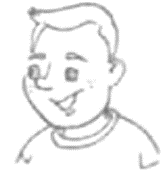
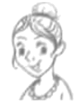
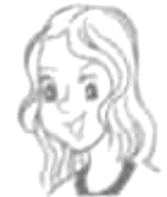
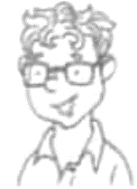

2021年北京市中考英语试题 · 阅读理解 第1篇 第21、22、23题
三、阅读理解(每题2分,共26分)
阅读下列短文,根据短文内容,从短文后各题所给的A、B、C、D四个选项中,选择最佳选项。
A
Young Heroes for the Planet
Nowadays, people around the world are working to help our planet. Check out how the four young adults made a difference.
 Saving Pandas When Jack was 11, he started a group to teach kids about pandas. He also sold toy pandas to raise money to protect pandas in danger. “I hope to encourage more people to care about pandas,” Jack says. |
 Growing Right Kathy, 14, set up an organization to educate people about growing right plant in right places. She also wrote a book to help people learn what plants are native to (本土的)their area. |
 Creating Energy At the age of 12, Linda invented a machine called SuperE. It collects heat from fields to make electricity(电), Linda says her invention creates electricity in a way that is less harmful to the environment. |
 Cleaning Up Patrick, 13, joined the Ocean Heroes Camp last year. He started a project and picked up plastic waste around nearby lakes with his friends. The goal of the project was to fight plastic pollution. |
21. Who started a group to teach kids about pandas?
A Jack.B. Kathy.C. Linda.D. Patrick.
22 How old was Linda when she invented SuperE?
A. 11.B. 12.C. 13.D. 14.
23. What was the goal of Patrick’s project?
A. To fight plastic pollution.B. To protect pandas in danger
C. To learn about native plants.D. To use heat to make electricity.